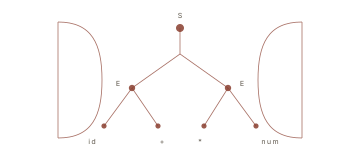
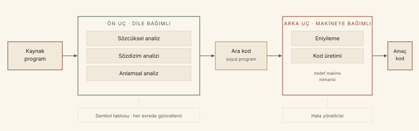
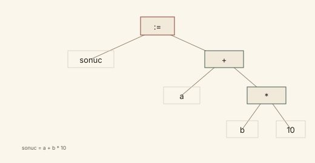
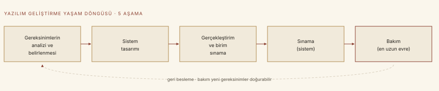
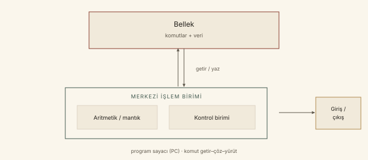

Bu pilot, PD0 ve PD1 ders destelerinin sınav odaklı, kâğıt hissi veren bir çalışma özetidir. Amaç slaytları yalnızca tekrar etmek değil; kavramları, aralarındaki neden–sonuç ilişkilerini ve sık karıştırılan ayrımları tek bir metinde toplamaktır.
pdftotext ile çıkarıldı; metin içermeyen eğitsel slaytlar sayfa görüntüsü olarak okundu. Şekiller sadeleştirilerek yeniden çizildi.Birinci eksen: “Dil nedir ve nasıl çalışır?” PD0 bunu tanımlar; çevrim hattını ve yazılım yaşam döngüsündeki yeri gösterir. İkinci eksen: “Dilleri neye göre değerlendiririz?” PD1 okunabilirlik, yazılabilirlik, güvenilirlik ve maliyet ölçütlerini, paradigmaları ve implementasyon yöntemlerini sunar. PD2–PD8 bu iki ekseni tarih, sözdizimi/semantik, analiz, tipler, akış denetimi ve altprogramlarla derinleştirir.
Bu dosya nihai kılavuzun üslup ve tasarım pilotudur. Bölüm 0 ve 1 tam kapsanır; ortak kavram sözlüğü, yöntem kartları, formüller/olgular, bağlantılar ve kapsam denetimi de pilot ölçeğinde hazırlanmıştır. PD2–PD8 eklendiğinde bu bölümler genişletilecek, bölüm başına yoğunluk korunacaktır.
PD programlama dili ders destesi · CFG bağlam-bağımsız gramer (context-free grammar) · BNF Backus–Naur formu · AST soyut sözdizimi ağacı (abstract syntax tree) · SDLC yazılım geliştirme yaşam döngüsü (software development life cycle) · JIT tam-zamanında derleme (just-in-time) · JVM Java Sanal Makinesi · TIOBE programlama topluluğu indeksi.
Not: Kaynak slaytlarda geçen “imperative”, “functional”, “logic” ve “object-oriented” terimleri Türkçe metinde sırasıyla zorunlu/komut merkezli, fonksiyonel, mantıksal ve nesneye yönelik olarak karşılanmıştır. İngilizce terim ilk kullanımda parantez içinde verilmiştir.
Pilot dosya: PD0–PD1. Sayfa numaraları bu PDF’e aittir; kaynak slayt referansları metin içinde verilmiştir.
Programlama dili nedir? Neden birbirinden farklı diller vardır? Bir program bilgisayarın anlayacağı biçime nasıl dönüşür ve bu dönüşüm yazılım geliştirme sürecinin neresinde durur?
Church–Turing hipotezi, bütün programlama dillerinin ve bilinen hesaplama cihazlarının —performans açısından değil, ifade ve problem çözme yeteneği açısından— eşdeğer olduğunu söyler. Bunun doğrudan sonucu şudur: bir genel amaçlı programlama dilinde yazılan algoritma, başka bir genel amaçlı dilde de yazılabilir. PD0, s. 3
Peki neden bu kadar çok dil vardır? Kaynak, 2019 itibarıyla 2.500’den fazla programlama dili bulunduğunu belirtir. Bu çeşitlilik, dillerin tarihsel gelişiminden, farklı uygulama gereksinimlerinden ve bir iş için uygun olan dilin başka bir iş için uygun olmamasından kaynaklanır. PD0, s. 6, 19–20
Bu dersin amacı “bir dil öğretmek” değildir. Amaç, programlama dillerinin ortak kavramlarını ve bu kavramlar için farklı dillerde sağlanan yapıları incelemektir. Kavramları örneklemek için Pascal, C, C++, Java, Lisp ve Prolog gibi diller kullanılır. Ders ayrıca farklı paradigmaları, “daha iyi dil” tartışmasını ve derleyici tasarımı, yazılım mühendisliği, nesneye yönelik tasarım gibi alanlara temel oluşturmayı hedefler. PD0, s. 4–5
Kaynak, “dil amaçları ve trade-off’lar” şemasında programlama dilinin farklı paydaşların beklentileriyle çevrili olduğunu gösterir: mimar, programcı, test edici, hata bulma araçları ile derleyici/yürütme zamanı çevresi. Bu paydaşların öncelikleri farklıdır; dil tasarımı bu beklentiler arasında denge kurar. PD0, s. 9
Kaynak slaytta Ekim 2019 TIOBE indeksi de yer alır; ilk altı sıra Java (%16.884), C (%16.180), Python (%9.089), C++ (%6.229), C# (%3.860) ve Visual Basic .NET’tir. Bu oranlar Ekim 2019 anlık görüntüsüdür; güncel sıralama için kullanılmamalıdır. PD0, s. 7
Doğal dillerin kendilerine özgü kelimeleri, işaretleri ve kelimeleri cümlelere dönüştüren dilbilgisi kuralları vardır. Dilbilgisi açısından doğru bir cümle bir anlam ifade eder; kurallarda hata olduğunda cümle anlaşılamaz. Programlama dilleri de benzer bir yapıya sahiptir: her dilin sözlüğü, işaretleri ve yazım kuralları vardır. Programlama dillerinde bu kurallara sözdizimi (syntax) denir. PD0, s. 10–12
Programcı, dilin sözdizimi kurallarına göre kelime ve işaretleri bir araya getirerek bilgisayarın yapmasını istediği işi anlatan bir deyim oluşturur. Doğal dillerde konuşma veya yazma sırasında hata yapılabilir; programlama dillerinde ise hataya tolerans yoktur. Herhangi bir sözdizimi hatası, deyimin bilgisayar açısından hiçbir anlamı olmamasına ve programın çalışmamasına yol açar. Bu nedenle programcının dilin sözdizimi kurallarını bilmesi gerekir. PD0, s. 13
Programlama dili, bir problemin çözümünün bilgisayardaki gerçekleştirimini ifade etmek amacıyla tasarlanmış; hem insanlar hem de bilgisayarlar tarafından ortak olarak anlaşılacak kurallar ve semboller dizisidir. PD0, s. 14
Bir programlama dilinin bilgisayar tarafından anlaşılması için sözdiziminin ve anlamının makine diline çevrilmesi gerekir. Makine dili, bir bilgisayarın doğrudan anladığı gösterimdir; bilgisayarların “ana dili” olarak nitelenebilir. Bu çevrim derleme veya yorumlama yöntemleriyle yapılır. PD0, s. 18
| Boyut | Doğal dil | Programlama dili |
|---|---|---|
| İletişim | İnsanlar arasında | İnsan ile bilgisayar arasında |
| Kurallar | Dilbilgisi | Sözdizimi (syntax) ve anlambilim (semantics) |
| Hata toleransı | Anlaşılabilir ölçüde esnek | Yok; hatalı deyim çalışmaz |
| Öğrenme | Doğal edinim | Kuralların açıkça öğrenilmesi gerekir |
Diller zaman içinde gelişmiştir; ilk diller 1950’lerin başında ortaya çıkmış, bugünkü dillere göre oldukça zayıf tasarımlara sahipti. Modern diller, farklı gereksinimlere cevap vermek üzere geliştirilmiştir. Bilgisayar programları genel olarak sistem programları ve uygulama programları olarak ikiye ayrılır; bazı diller sistem programları, bazıları uygulama programları için tasarlanmıştır. Bir iş için uygun olan dil, başka bir iş için uygun olmayabilir. PD0, s. 19–20
Sözdizimi bir deyimin biçimsel olarak geçerli olup olmadığını; anlambilim ise bu geçerli deyimin ne anlama geldiğini belirler. Bir program sözdizimsel olarak doğru olduğu hâlde anlamsal olarak hatalı olabilir. Bu ayrım, 0.4’teki derleme aşamalarının da temelidir: sözdizim çözümleme ağaç kurar, anlam çözümleme bu ağacı tipler ve işlemler açısından yorumlar.
Programlama dilleri düşük düzeyli ve yüksek düzeyli olarak ikiye ayrılır. Bu ayrım, dilin makine donanımına ne kadar bağımlı olduğuyla ilgilidir.
| Özellik | Düşük düzeyli dil | Yüksek düzeyli dil |
|---|---|---|
| Donanım bağımlılığı | Yüksek; makineye özgü | Düşük; makineden bağımsız |
| Gösterim | Makine kodu (0/1) veya sembolik assembly | Okunabilir, insan odaklı sözdizimi |
| Soyutlama | Az; kaydediciler, bellek adresleri açık | Fazla; makine ve assembly ayrıntıları gizli |
| Örnek | Makine kodu, assembly | C, Pascal, Java, Lisp, Prolog |
| Bu dersin odağı | Temel kavram olarak | Asıl inceleme alanı |
Assembly dilinde komutlar, makine kodundaki işlemlerin insan tarafından okunabilir kısa adlarıyla (mnemonic) gösterilir. Örneğin ADD R1, 28, R1 kaydedicisindeki değere 28 eklenmesini belirtir. Yüksek düzeyli dillerde ise okunabilirlik, makineden bağımsızlık ve program kütüphaneleri öne çıkar. PD0, s. 21
“Düzey” burada bir dilin soyutlama düzeyini anlatır; bir dilin diğerinden daha “güçlü” veya daha “iyi” olduğunu tek başına söylemez. Church–Turing eşdeğerliği ifade gücü içindir; düşük/yüksek düzey ayrımı ise makineye yakınlık ve okunabilirlikle ilgilidir.
Yüksek düzeyli bir dilde yazılmış programın bilgisayarda çalıştırılabilmesi için o bilgisayarın makine diline çevrilmesi gerekir. Bir programlama dili komutlarının makine diline çevrimini gerçekleştiren yazılımlara dil çevirici yazılımlar; bu yazılımların oluşturulmasına ise dilin gerçekleştirimi (implementation) denir. İki temel yöntem vardır: derleme (compilation) ve yorumlama (interpretation). PD0, s. 22
Otomatik çeviri paradigmasında kaynak dil analiz edilir; ara dil üzerinden transfer/üretim yapılabilir veya doğrudan hedefe çevrilebilir. PD0, s. 23
Yorumlayıcılar bir programı çok az veya hiç ön işleme sokmadan olduğu gibi çalıştırır. Yorumlayıcı, programın her deyimini birer birer makine diline çevirir ve o deyimle ilgili bir altprogram çağırarak çalıştırır. Yani yorumlama, çevrim ile yürütmeyi birleştirir. Yorumlayıcı, dildeki her olası işlem için makine dilinde yazılmış bir altprogram içerir; programın yorumlanması bu altprogramların uygun sırada çağrılmasıdır. Çalışma döngüsü üç adımdır: sıradaki deyimi al, yapılacak işlemleri belirle, işlemleri gerçekleştir. PD0, s. 24–25
1. Sıradaki deyimi al. 2. Yapılacak işlemleri belirle. 3. İşlemleri gerçekleştir. Programdaki deyimler bitene kadar tekrarla. Bir döngü içindeki deyimler her seferinde yeniden çevrilir. PD0, s. 25, 27
Derleyici, bir programlama dilinde yazılmış program için ona eşdeğer olan makine dilinde bir program üretir. Derleme sürecinin başında verilen yüksek düzeyli programa kaynak program (source program), sonuçta oluşan makine dilindeki programa amaç program (object program) denir. Derleme sırasında geçen zamana derleme zamanı (compile time), amaç programın çalışması sırasında geçen zamana çalışma zamanı (run time) denir. Derleyici tüm programı bir kerede denetler; sözcüksel ve sözdizimsel hataları bulur; hata yoksa nesne kodu üretir; nesne kod daha sonra çalışabilir koda çevrilir. PD0, s. 28–33
Assembler, assembly dilindeki bir komutu makine kodundaki bir komuta bire bir çevirir. Derleyici ise yüksek düzeyli bir deyimi birden çoğa çevirir: tek bir a = b + c - d; deyimi, yükleme, toplama, çıkarma ve saklama gibi birçok makine komutuna dönüşebilir. PD0, s. 30–31
Derleyicinin ön ucu (front-end) programın sözdizimini ve anlamını dilin kurallarına göre inceler, bir ara kod oluşturur. Bu süreçte sırasıyla token dizisi, ayrıştırma ağacı ve ara kodla ifade edilen soyut program elde edilir. Arka uç (back-end) ise ara kod gösterimine eniyileme uygulayarak amaç programı, yani makine kodunu üretir. Ön uç dile bağımlı, arka uç makineye bağımlıdır. PD0, s. 34, 70

Derleyicinin ön ucundaki sözcüksel çözümleyici, kaynak programı bir dizi token’a çevirir. Token sözdizimsel bir kategori belirtir; programlama dillerinde bu kategori “anahtar kelime”, “matematiksel sembol”, “tanımlayıcı” gibi türler olabilir. Token’ı belirten alt karakter katarına lexeme denir. Kullanılabilecek tüm lexeme’ler örüntüler (pattern) ile tanımlanır; örüntüler düzenli ifadeler (regular expressions) kullanılarak yazılır. PD0, s. 36–37
Sözcüksel analiz aracı üç şeyi yapabilmelidir: bütün boşlukları ve açıklamaları temizlemek, karakter katarı içindeki tüm token’ları bulmak, bulunan token için lexeme ve satır numarası gibi özellikleri döndürmek. Derleme sürecinde her tanımlayıcı için bir sembol tablosu elemanı oluşturulur; tanımlayıcı ilk kez görüldüğünde tabloya eklenir, sonraki kullanımlar aynı elemana başvurur. PD0, s. 38–40
| Lexeme | Token | Örnekteki rol |
|---|---|---|
toplam | IDENTIFIER | değişken adı |
= | ASSIGN_OP | atama |
3 | NUMBER | sayı |
+ | ADD_OP | toplama |
2 | NUMBER | sayı |
; | SEMICOLON | deyim sonu |
Örnek, toplam=3+2; deyiminin token dizisine ayrılmasıdır. PD0, s. 40
Düzenli ifadeler sonlu durum otomatları (FSA) ile tanımlanabilen dilleri ifade eder. Tasarımda üç kural önemlidir: bir düzenli ifade özel bir token tipinin tüm durumlarını kapsamalıdır; belirsizliği önlemek için en uzun eşleme seçilir; eş uzunluklu belirsizlikte ilk eşleme seçilir. PD0, s. 41–42
Sözdizim çözümleme, token dizisini ve dilin gramerini kullanarak bir ayrıştırma ağacı (parse tree) oluşturmayı amaçlar. Böylece programın sözdizimsel olarak doğru olup olmadığı belirlenir. Sözdizim çözümleyiciye ayrıştırıcı (parser) denir. Düzenli dillerin çözebildiği yapıların karmaşıklığı sınırlı olduğu için sözdizim analizinde yeterli değildir; iç içe parantezler gibi yapılar için gramer gerekir. PD0, s. 48–49
Bağlam-bağımsız gramerler (CFG) birçok programlama dilini tanımada yeterlidir ve dört bileşenden oluşur: terminal semboller, terminal olmayan semboller, başlangıç sembolü ve üretim kuralları. Karşılıklı parantezleri tanıyan bir gramer şöyledir: S → (S)S ve S → ε. Burada tek terminal olmayan S, terminal semboller “(” ve “)”, başlangıç sembolü S’dir. PD0, s. 51
Ayrıştırma ağacı iki temel teknikle oluşturulur. Yukarıdan aşağıya (top-down) yöntemde ağaç kökten başlar; amaç sembolden token’lara doğru üretimler seçilir. Çıkmaza girildiğinde geri izleme (backtracking) yapılır: en yakın tanımlamaya dönülür ve kullanılmamış bir üretim denenir. Aşağıdan yukarıya (bottom-up) yöntemde ise token dizisinden başlanır; olası terminal olmayanlar belirlenerek amaç sembole ulaşılır. PD0, s. 52–55

sonuc = a + b * 10 deyimi için ayrıştırma ağacı. Çarpma, toplamadan daha derinde olduğu için önce değerlendirilir. PD0, s. 57Belirsizlik (ambiguity), aynı karakter dizisi için iki veya daha fazla ayrıştırma ağacı oluşmasıdır. Örneğin E → E + E | E - E | 0 | … | 9 grameriyle 2 - 3 + 4 dizisi iki farklı ağaçla türetilebilir. Belirsiz gramer bazen belirli hâle getirilebilir: E → E + T | E - T | T ve T → 0 | … | 9 yazımı, işlem sırasını tek anlamlı kılar. PD0, s. 61–63
Sözdizim analizi “bu token dizisi dilin gramerine uyuyor mu?” sorusunu yanıtlar ve bir ağaç üretir. Anlam analizi ise bu ağacın üzerinde tipleri, tanımları ve işlemleri denetleyerek daha soyut bir program kurar. Ayrıştırma ağacının varlığı tek başına programın anlamlı olduğunu göstermez.
Anlam çözümleme, sözdizim çözümleme sırasında oluşturulmuş ayrıştırma ağacını kullanarak soyut bir programlama dilinde bir program oluşturur. Anlam çözümleyici, her deyim için sözdizim çözümleyicinin belirlediği sözdizimine göre bir çevrim altyordamı çağırır. Ortaya çıkan soyut dil, üst düzeyli bir birleştirici diline benzer; kaynak dilin veri türleri ve işlemleriyle uyumlu, hayali bir makinenin makine dilidir ve kaynak ile amaç diller arasında bir ara adım oluşturur. PD0, s. 66–67
Örnek olarak Pascal’daki gcd programının ayrıştırma ağacı, anlam analizinde sembol tablosuyla birlikte ele alınır. Sembol tablosunda her tanımlayıcı için indeks, sembol ve tip bilgisi tutulur: INTEGER ve TEXTFILE tipleri, INPUT/OUTPUT dosya değişkenleri, GCD programı, I ve J tamsayı değişkenleri. PD0, s. 68–69
Ön uçtan çıkan soyut program, arka uçta eniyileme ve kod üretimi için kullanılır. Kaynak slayttaki örnekte cur_time = start_time + cycles * 60 deyimi şu ara koda dönüşür: temp1 := inttoreal(60), temp2 := id3 * temp1, temp3 := id2 + temp2, id1 := temp3. Eniyilemeden sonra sabit çarpım birleştirilir: temp1 := id3 * 60.0, id1 := id2 + temp1. Son olarak assembly düzeyinde MOVF, MULF, MOVF, ADDF, MOVF komutları üretilir. PD0, s. 100–105
# Ara kod (eniyileme öncesi)
temp1 := inttoreal(60)
temp2 := id3 * temp1
temp3 := id2 + temp2
id1 := temp3
# Eniyileme sonrası
temp1 := id3 * 60.0
id1 := id2 + temp1Eniyileme (optimization), derleyicinin arka ucunda kodu daha etkin yapmaya çalışan bileşendir. Amaç programı otomatik olarak değiştirerek daha hızlı çalışmasını, daha az bellek kaplamasını ve kaynakları daha tutumlu kullanmasını sağlamaktır. Eniyileme makine bağımsız (kaynak programdan soyut programa kadar herhangi bir ara biçimde) ve makine bağımlı (makine dilinin özelliklerini kullanarak) olmak üzere ikiye ayrılır. PD0, s. 72–75
Kaynakta listelenen başlıca eniyilemeler şunlardır: ölü kod eliminasyonu, gereksiz kodların eliminasyonu, ortak alt ifadelerin eliminasyonu (common subexpression elimination), sabit katlama (constant folding), sabit yayma (constant propagation), ortak blok (basic block), gösterici eliminasyonu, inline fonksiyon açımı, döngü değişmezleri (loop invariants), döngü açımı (loop unrolling), döngü ayırması (loop splitting), yazmaç tahsisi (register allocation), komut çizelgelemesi (instruction scheduling) ve komut seçimi (instruction selection). PD0, s. 76–92
Sabit katlama: x = 10 + y + 2; → x = 12 + y; Sabit ifadelerin değeri çalışma zamanına bırakılmadan derleme zamanında hesaplanır.
Ortak alt ifade: sonuc = f1(a+b) + f2(a+b) ifadesinde a+b iki kez hesaplanır; c = a+b ile bir kez hesaplanıp iki yerde kullanılması eniyilemedir. PD0, s. 74, 80
Eniyileme, çalıştırılan deyimlerin sırasını kaynak koddan farklılaştırabilir; bu da hata ayıklamayı güçleştirir. Bu nedenle hata ayıklama sırasında eniyilemeyi kapatmak gerekir. Ayrıca okunabilirlik açısından, derleyicinin zaten yapabildiği eniyilemeleri programcının elle yapması kodun okunabilirliğini azaltabilir; kritik kodlar dışında okunabilirlik önceliklidir. PD0, s. 75, 79
Kod üretimi aşamasında arka uç, soyut dilde ifade edilen kodu alır ve belirli bir bilgisayar için makine kodunu oluşturur. Bir derleyici üreticisi, aynı ön ucu kullanan farklı arka uçlarla derleyici aileleri üretebilir; bir bilgisayar üreticisi de iyi bir arka uçtan sonra farklı kaynak dilleri ortak ara koda çeviren ön uçlarla birçok dili destekleyebilir. PD0, s. 70–71
| Ölçüt | Derleme | Yorumlama |
|---|---|---|
| Zaman etkinliği | Her deyim için makine kodu bir kez üretilir; program kaç kez çalışırsa çalışsın kullanılır. Daha hızlı yürütme. | Deyim her çalıştırıldığında yeniden çevrilir; daha yavaş. |
| Bellek kullanımı | Makine kodu üretilir; kod boyutu büyüyebilir. | Yüksek düzeyli deyimler özgün biçiminde kalır; yorumlayıcı altprogramları bellekte tutulur. Az deyim kullanan programlarda bellek israfı olabilir. |
| Hata bildirimi | Tüm program çevrildikten sonra toplu bildirim; hata kaynağını bulmak daha zor. | Her komut sırayla ele alındığı için hata doğrudan ve hemen bildirilir. |
Kaynak: PD0, s. 106–111; PD1, s. 120–129. Tablodaki “daha hızlı/daha yavaş” değerlendirmeleri kaynak slaytların genel eğilimini yansıtır; uygulamaya göre ayrıntılar değişebilir.
Tam yorumlama ve tam derleme iki uç durumdur. Bazı diller iki yöntemi birleştirir: program, sanal bir makinenin yorumlayacağı bir ara koda çevrilir. Java bu yaklaşımı uygular; Java programları bytecode adı verilen ara koda dönüştürülür ve JVM üzerinde yorumlanır. Bu yöntem taşınabilir kod üretmek için kullanılır. PD0, s. 112–113
Kaynakta ayrıca derleyici derleyicileri (compiler compilers; bir dil için derleyici üreten programlar), çapraz bütünleştiriciler (cross assemblers; bir assembly dilinden diğerine çeviri) ve çapraz derleyiciler (cross compilers) sayılır. PD0, s. 114
PD0’da çapraz derleyici, “herhangi bir programlama dilinde yazılmış bir programın başka bir programlama diline çevrilmesi” olarak tanımlanır. Yaygın literatürde “cross compiler” genellikle bir platformda çalışıp başka bir hedef platform için kod üreten derleyiciyi anlatır. Bu kılavuz kaynak slaytın tanımını esas alır; terim sınavda bu tanımla sorulabilir.
Kaynakta ödev: PD0 s. 122’de Lex & Yacc, Flex & Bison konularının araştırılması istenir. Bu bir sınav sorusu değil, kaynakta verilen araştırma görevidir; kılavuzda yalnızca kapsam bilgisi olarak anılmıştır.
Programlama dilleri, yazılım mühendisliğinin temelini oluşturan yazılım geliştirme yaşam döngüsünün (SDLC) gerçekleştirim aşamasında kullanılır. Kaynak, yaşam döngüsünü beş aşamada ele alır. PD0, s. 115–121

| Aşama | Ne yapılır? / dilin rolü |
|---|---|
| 1. Gereksinimlerin analizi ve belirlenmesi | Gereksinimler, kısıtlar ve hedefler belgelenir; dil seçimi henüz yapılmaz. |
| 2. Sistem tasarımı | Gereksinimler donanım/yazılım bileşenlerine ayrılır; mimari ve modüller belirlenir. Tasarım yöntemi anlaşılabilirlik ve değiştirilebilirliği etkiler. |
| 3. Gerçekleştirim ve birim sınama | Tasarıma uygun kod yazılır; her birim doğrulanır. Dilin okunabilirliği, yazılabilirliği ve kütüphaneleri burada öne çıkar. |
| 4. Sınama | Birimler birleştirilir; sistemin gereksinimlere uygunluğu test edilir ve sistem teslim edilir. |
| 5. Bakım | Hatalar düzeltilir, yeni gereksinimler eklenir. Kaynak, bunu en uzun ve en çok kaynak tüketen aşama olarak niteler; okunabilirlik bakımı doğrudan etkiler. |
Bölüm 0’ın ana çizgisi: Programlama dili yalnızca kod yazma aracı değil, problem çözme ve soyutlama aracıdır. Dilin düzeyi makineye yakınlığı, çevrim yöntemi çalışma zamanını, okunabilirlik ise bakım maliyetini belirler. PD0, s. 115–121
| Ayrım | Ana fikir |
|---|---|
| Sözdizimi / anlambilim | Biçimsel geçerlilik ile anlam ayrıdır; parser ağaç kurar, anlam çözümleyici tipleri ve işlemleri denetler. |
| Derleyici / yorumlayıcı | Derleyici çeviriyi yürütmeden ayırır ve makine kodu üretir; yorumlayıcı deyimi çalışma sırasında çevirip yürütür. |
| Assembler / derleyici | Assembler bire bir çevirir; derleyici bir yüksek düzeyli deyimi birçok makine komutuna çevirir. |
| Ön uç / arka uç | Ön uç dile bağımlıdır ve ara kod üretir; arka uç makineye bağımlıdır; eniyileme ve kod üretimi yapar. |
Dilleri neye göre değerlendiririz? Okunabilirlik, yazılabilirlik, güvenilirlik ve maliyet neden birbirleriyle çelişir? Von Neumann mimarisi dilleri nasıl şekillendirir; paradigmalar ve implementasyon yöntemleri bu tabloyu nasıl tamamlar?
PD1, derse “neden programlama dilleri kavramlarını öğreniyoruz?” sorusuyla başlar. Kaynak altı gerekçe sıralar: fikirleri ifade etme yeteneğini artırmak, uygun dilleri seçebilme bilinci geliştirmek, yeni diller öğrenme yeteneği kazanmak, implementasyonun önemini anlamak, bilinen dilleri daha iyi kullanmak ve bilgisayar biliminde kapsamlı ilerleme sağlamak. PD1, s. 3
Düşüncelerimizin derinliği, onları ilettiğimiz dilin ifade gücünden etkilenir. İnsanların sözlü veya yazılı olarak tanımlayamadığı yapıları kavramlaştırması zordur. Programcılar da benzer biçimde kullandıkları dilin kontrol yapıları, veri yapıları ve soyutlamalarıyla sınırlıdır. Farklı dillerin özelliklerini bilmek bu sınırları genişletir. PD1, s. 4–6
Bir programcı zorunlu olarak belirli bir dili kullanıyorsa, o dilde olmayan bir özelliği benzetim (simülasyon) yoluyla gerçekleştirebilir. Örneğin FORTRAN 90’da substring arama fonksiyonu INDEX’tir; Pascal’da benzer bir fonksiyon yoktur, ancak programcı bu işi bir altprogram yazarak çözebilir. Ancak benzetim, özelliği doğrudan barındıran dile göre daha hantal ve karmaşıktır; seçim özgürse o özelliği gerçekten destekleyen dil tercih edilmelidir. PD1, s. 7
Kavram bilgisi bir dili öğretmez; dil öğrenmeyi ve dil seçmeyi hızlandırır. Bu dersin amacı da belirli bir dilin sözdizimini ezberletmek değil, dillerin ortak yapılarını karşılaştırmaktır.
Farklı uygulama alanları, farklı dil özelliklerini öne çıkarır. Kaynak beş alanı ayırır: bilimsel uygulamalar, ticari uygulamalar, yapay zekâ, sistem programlama ve web yazılımı. PD1, s. 15–16
| Alan | Baskın gereksinim | Tipik veri / özellik | Örnek dil |
|---|---|---|---|
| Bilimsel | Sayısal hesaplama, çok sayıda kayan nokta işlemi | Diziler, matrisler; basit veri yapıları | Fortran |
| Ticari | Veri işleme, rapor üretme | Ondalık sayılar, karakterler | COBOL |
| Yapay zekâ | Sembol işleme, esneklik | Sayılar yerine semboller; bağlı listeler; çalışma sırasında üretilen kod | LISP, PROLOG |
| Sistem | Verimlilik, donanıma erişim | Düşük seviyeli özellikler; assembly yaygın | C (UNIX C ile yazılmıştır) |
| Web | İşaretleme + betik + genel amaçlı kod | XHTML, PHP, Java gibi seçmeci/derlemeci koleksiyon | XHTML, PHP, Java |
Bilimsel uygulamalar bilgisayarların ilk kullanım alanıydı; bu nedenle ilk diller sayısal programlama özelliklerini vurguladı. Ticari uygulamalar veri işleme ile ikinci sırada gelişti. Yapay zekâda sayılar yerine semboller ve bağlı listeler öne çıkar; bazı uygulamalarda kod segmentleri program çalışırken üretilir. Sistem programlamada işletim sistemleri ve destek araçları yazılır; sürekli kullanım nedeniyle verimlilik gerekir, bu yüzden assembly ve düşük seviyeli özellikler önemlidir. Web yazılımı ise işaretleme, betik ve genel amaçlı dillerin bir arada kullanıldığı melez bir alandır. PD1, s. 15–16
Bir programlama dili dört temel ölçütle değerlendirilir: okunabilirlik (readability), yazılabilirlik (writability), güvenilirlik (reliability) ve maliyet (cost). Bu ölçütler birbirinden bağımsız değildir; birini iyileştirmek diğerini zayıflatabilir. PD1, s. 17
Okunabilirlik: Programların okunma ve anlaşılma kolaylığı. Yazılabilirlik: Bir dilin program yazmada kullanılabilme kolaylığı. Güvenilirlik: Programın şartlara uygunluğu; istenen görevi doğru yapması. Maliyet: Eğitim, yazma, derleme, yürütme, bakım ve implementasyon dahil toplam maliyet. PD1, s. 17
| Karakteristik | Okunabilirlik | Yazılabilirlik | Güvenilirlik |
|---|---|---|---|
| Sadelik (simplicity) | ✓ | ✓ | ✓ |
| Kontrol yapıları | ✓ | ✓ | ✓ |
| Veri tipleri ve yapıları | ✓ | ✓ | ✓ |
| Sözdizimi tasarımı | ✓ | ✓ | ✓ |
| Soyutlama desteği | — | ✓ | ✓ |
| İfade gücü (expressivity) | — | ✓ | ✓ |
| Tip kontrolü | — | — | ✓ |
| İstisna yönetimi | — | — | ✓ |
| Sınırlı aliasing (restricted aliasing) | — | — | ✓ |
Kaynak slayttaki ilişki matrisi. PD1, s. 18, 37, 48
Okunabilirlik, bir dilin değerlendirilmesinde en önemli ölçütlerden biridir. Okunabilir programlar hata olasılığını azaltır ve bakımı kolaylaştırır. Dilin kavramları, yapıları ve sözdizimi okunabilirliği doğrudan etkiler. Beş alt faktör sayılır: genel kolaylık, ortogonallik, kontrol ifadeleri, veri tipleri/yapıları ve sözdizimi tasarımı. PD1, s. 19–20
Genel kolaylık: Yönetimi kolay, kullanışlı özellikler kümesi okunabilirliği artırır. Aynı işi yapmanın birden çok yolu (feature multiplicity) istenmez; örneğin Java’da bir değişkeni artırmanın Count++, ++Count, Count+=1 gibi yolları vardır. Operatör aşırı yüklemesi de (operator overloading) okuyucuyu belirsizliğe düşürebilir. PD1, s. 21–22
Ortogonallik (orthogonality): Az sayıda ilkel yapı ve bunların az sayıda yolla birleştirilmesi; her mümkün kombinasyonun kurallara uygun olmasıdır. Dört ilkel tip ve array/pointer gibi birleştiricilerle çok sayıda yapı elde edilebilir. VAX’ın tek ADDL komutuyla kaydedici ve bellek operandlarını kullanabilmesi, IBM’in ayrı A/AR komutlarına göre daha ortogonal bir tasarımdır. PD1, s. 24–25
Ortogonallik dili öğrenmeyi ve kodlamayı kolaylaştırır; istisna kurallarını azaltır. Ancak aşırı ortogonallik de sakıncalıdır: derleyici geliştirmeyi zorlaştırabilir ve hata yapma olasılığını artırabilir. Fonksiyonel diller (örneğin Lisp) basit ve ortogonal yapılarıyla bilinir; değişken ve atama yerine fonksiyon uygulamasına dayanırlar. PD1, s. 26–28
Kontrol ifadeleri: İyi organize edilmiş kontrol deyimleri (örneğin while) okunabilirliği artırır. Veri tipleri ve yapıları: Timeout=true, Timeout=1’e göre anlamı netleştirir. Sözdizimi tasarımı: Değişken adı uzunluğu, anahtar kelimeler ve anlam–biçim ilişkisi belirleyicidir. Fortran 77’de adlar 6 karakterle sınırlıdır; Fortran 95’te Do/End değişken adı olabilir; C’de static kullanıma göre farklı anlam taşır; grep ise işlevini çağrıştırmaz. PD1, s. 29–36
Yazılabilirlik, bir program yazılırken dilin ne kadar kolay kullanıldığının ölçüsüdür. Okunabilirliği etkileyen faktörler (basitlik, ortogonallik, veri tipleri/yapıları, sözdizimi) yazılabilirliği de etkiler. Yazılabilirlik uygulamaya göre değişir: grafik arayüzlü bir program için Visual Basic, C’ye göre daha yazılabilir olabilir; bir işletim sistemi için C, Visual Basic’e göre daha uygundur. PD1, s. 38–39
Üç alt faktör öne çıkar: basitlik ve ortogonallik, soyutlama desteği ve anlamlılık/açıklayıcılık (expressivity). Çok fazla farklı yapı programcının öğrenme yükünü artırır; az sayıda ilkel yapı ve yasal kombinasyonlar yazılabilirliği artırır. Ancak aşırı ortogonallik hataları bulmayı zorlaştırabilir. PD1, s. 40–41
Soyutlama, karmaşık yapı veya işlemleri ayrıntıları göz ardı ederek tanımlama ve kullanma yeteneğidir. Proses soyutlamaya en iyi örnek altprogramlardır; veri soyutlamaya örnek olarak Fortran 77’de ikili ağaç (binary tree) tanımlamak verilebilir. Fortran 77 pointer ve heap tabanlı dinamik bellek yönetimini desteklemediği için bu yapı zor ve okunaksızdır; Java’da iki pointer ve bir integer ile aynı yapı çok daha kolay kurulur. Sınıf yapısı, proses ve veri soyutlamasını birleştirir. PD1, s. 42–44
Anlamlılık (expressivity): İşlemleri belirtmenin elverişli yollarını kullanmak yazılabilirliği artırır. Birçok modern dilin for ifadesi içermesi; C’de count++ ifadesinin count=count+1’e göre daha açıklayıcı olması örnek verilebilir. PD1, s. 45
Bir program tüm şartlar altında istenen görevi doğru yapıyorsa güvenilirdir. Bir dilin güvenilirliği, o dille geliştirilen programların güvenilir olmasıdır. Güvenilirliği belirleyen başlıca faktörler tip kontrolü, istisna yönetimi, aliasing ve okunabilirlik/yazılabilirliktir. PD1, s. 46–47
Maliyet, dilin toplam kullanım maliyetidir. Kaynak yedi bileşen sayar: programcıların eğitimi (basitlik/ortogonallik ve deneyim), program yazma (yazılabilirlik ve uygulamaya yakınlık), derleme (örneğin Ada’nın ilk sürümlerinde yüksekti, sonra azaldı), yürütme (çalışma zamanı tip kontrolü gibi ek maliyetler), implementasyon sistemi (ücretsiz derleyiciler, gereken donanım), güvenilirlik (zayıf güvenilirlik yüksek maliyet doğurur; uzay ve kriptoloji örnekleri) ve bakım. Bakım, toplam maliyet içinde en yüksek paya sahiptir; yazılım projelerinde odak kodlamadan bakıma kaymıştır. PD1, s. 54–56
Diğer ölçütler taşınabilirlik (portability), genellik (generality) ve iyi-tanımlanmışlık (well-definedness) olarak sıralanır. Taşınabilirlik, programların bir implementasyondan diğerine taşınabilme kolaylığıdır ve dilin standartlaşma derecesine bağlıdır; BASIC’in standartlaşması zayıftır. Standartlaşma pahalı ve zaman alıcıdır: C++ standardı için 1989’da kurulan komite 1998’de çalışmasını tamamlamıştır. Genellik, dilin çok çeşitli uygulamalarda kullanılabilmesi; iyi-tanımlanmışlık ise resmî tanımın kesin ve tam olmasıdır. PD1, s. 57–58
Dil tasarımını iki ana faktör etkiler: bilgisayar mimarisi ve programlama tasarım yöntemleri. PD1, s. 59
Son 50 yılda popüler olan dillerin çoğu, veri ve komutları tek bir depolama biriminde tutan Von Neumann mimarisi dikkate alınarak tasarlanmıştır. Bu mimaride bellek ile CPU ayrıdır; komutlar ve veri bellekten CPU’ya iletilir, işlem sonucu belleğe geri gönderilir. 1940’tan sonra üretilen bilgisayarların çoğunda bu mimari (Princeton mimarisi) hâkimdir. PD1, s. 60–61

Bu mimari, imperative (zorunlu/komut merkezli) dillerin temel yapılarını açıklar: değişkenler bellek hücrelerini modeller; atama ifadeleri bellek ile CPU arasındaki iletimi (piping) temsil eder; iterasyon, bu mimaride tekrarı gerçekleştirmenin en verimli yoludur. İfadelerdeki operatörler CPU tarafından bellekten alınır, işlemden geçtikten sonra sonuç belleğe geri gönderilir; bu, atamanın sol tarafıdır. PD1, s. 63–64
Von Neumann bilgisayarlarda iterasyon hızlıdır, çünkü komutlar bellekte birbirine yakın hücrelerdedir ve aynı komut döngüde defalarca çağrılır. Bazı uygulamalar için özyineleme daha doğal olsa da bu mimaride iterasyon genellikle daha verimlidir. Komutların bellekte bulunup CPU’da işlenmesi fetch–execute işlemi olarak adlandırılır; sıradaki komutun adresi program sayacı (program counter) ile sağlanır. Bellek ile işlemci arasındaki bağlantı hızı bilgisayarın hızını sınırlar; buna Von Neumann darboğazı (bottleneck) denir. PD1, s. 65–67, 119
Program sayacını başlangıç durumuna getir. Tekrarla: program sayacının gösterdiği komutu bellekten getir (fetch); sayacı bir artır; komutu çöz (decode); komutu çalıştır (execute). PD1, s. 67, 118
Fonksiyonel dillerde imperative dillerdeki değişkenler, atama ifadeleri ve iterasyonlar yoktur; hesaplamalar fonksiyonların doğrudan değerlere uygulanmasıyla yapılır. John Backus 1978’de, fonksiyonel dillerin birçok yararlı özelliğine rağmen imperative dillerin yerini almasının günümüzde olası olmadığını; bunun ancak fonksiyonel dilleri verimli işleyen bir Von Neumann mimarisi tasarlanırsa değişebileceğini söyler. Başka bir grup ise imperative dillerin daha doğal olduğunu savunur. PD1, s. 68–69
| Dönem | Eğilim | Dile yansıması |
|---|---|---|
| 1950’ler–1960’lar başı | Basit uygulamalar; makine verimliliği | Donanıma yakın, verimli diller |
| 1960’ların sonu | İnsan verimliliği öne çıkar | Okunabilirlik, iyi kontrol yapıları, yapısal programlama, yukarıdan aşağıya tasarım, adım adım iyileştirme |
| 1970’ler | Donanım maliyeti düşer, yazılım maliyeti artar; süreç odaklılıktan veri odaklılığa geçiş | Veri soyutlama |
| 1980’lerin ortası | Nesneye yönelik programlama | Veri soyutlama + miras + polimorfizm; CLOS, Prolog++ gibi melezler |
Kaynak: PD1, s. 70–71. İşleme dayalı programlama hiçbir zaman tamamen terk edilmedi; eşzamanlı (concurrent) dillerde hâlâ tercih edilir (Ada, C#, Java).
Bir paradigma, bir grubun ortak kararlarını temsil eden ve konuya yeni bir bakış sağlayan kavramsal şemadır. Programlama paradigmaları, programcının problemlere çözüm üretme biçimini etkiler; farklı stiller getirir ve algoritmalara bakışı değiştirir. PD1, s. 73
Belirli bir paradigmayı destekleyen dillere paradigma-yönelik diller denir. Programlama dilleri ile paradigmalar arasında bire bir ilişki yoktur; bazı diller birden çok paradigmayı destekler. Örneğin C++ hem imperative hem nesneye yönelik programlamayı destekler. Tasarım yöntemi ile dil paradigması aynıysa, tasarım–programlama eşlemesi kolaylaşır; aynı paradigmadaki bir dili öğrenmek diğerini öğrenmeyi de kolaylaştırır. PD1, s. 74–75
| Paradigma | Ana fikir | Tipik diller |
|---|---|---|
| Imperative | Program bir dizi işlemdir; değişkenler ve prosedürlerle bellek güncellenir. Deyimler değişkenler üzerinden iletişim kurar. | C, FORTRAN, PL/I, Pascal, COBOL, Ada |
| Nesneye yönelik | Nesneler; veri ve işlemler tek bir birimde; veri soyutlama, miras, geç bağlama. | Simula, Smalltalk, C++, Java, C# |
| Fonksiyonel | Hesaplama, fonksiyonların değerlere uygulanmasıdır; fonksiyonlar başka fonksiyonları çağırabilir veya parametre olabilir. | Lisp, Scheme, ML, Haskell |
| Mantıksal | Ne yapılacağı belirtilir; kurallar ve gerçekler üzerinden sorgu yanıtlanır. Kural sırası belirli değildir. | Prolog |
Kaynak, Dexter’in Mimi’ye çiçek göndermesi problemini dört paradigmayla karşılaştırır. Bu örnek, paradigmaların yalnızca sözdizimi değil, probleme bakış farkı olduğunu gösterir. PD1, s. 91–99
| Yaklaşım | Çözümün biçimi |
|---|---|
| Imperative | Adım adım işlemler: para al, sakla, çiçekçiye öde, çiçeği al, sakla, gönder. |
| Nesneye yönelik | Dexter, banka memuru, çiçekçi, dağıtımcı ve Mimi arasındaki nesne ilişkileri. |
| Fonksiyonel | Fonksiyon bileşimi: Dagit(Satinal(Cek())); para çekme, satın alma, dağıtma. |
| Mantıksal | Sorgu: CicekAlir(Mimi)?; kurallar ve gerçekler üzerinden yanıt aranır. Eksik gerçek varsa yanıt “hayır” olur. |
Kaynak, dört temel paradigmanın yanında işaretleme (markup), görsel (visual), betik (scripting), hibrit ve özel amaçlı dilleri sayar. XHTML ve XML işaretleme dilleridir; tek başına programlama dili değildir. Visual diller (örneğin VB.NET) sürükle-bırak mantığıyla grafik arayüz tasarlamaya yarar ve imperative dillerin alt kategorisi olarak görülür. Scripting diller (Perl, JavaScript, Ruby) de imperative dillerdir. Hibrit diller, işaretleme dili içine programlama yetenekleri serpiştirilmiş yapılardır (JSTL, XSLT). Özel amaçlı dillere RPG (ticari raporlar), APT (programlanabilir makineler) ve GPSS (sistem simülasyonu) örnek verilir. PD1, s. 90, 100–104
Dil tasarımındaki ölçütler birbiriyle çelişebilir. Hoare (1973), çok önemli birçok kriterin birbirleriyle çeliştiğini ve bu çelişkili kriterlerle iyi bir dil tasarlamanın zor bir mühendislik görevi olduğunu söyler. PD1, s. 105
| Ödün | Örnek | Sonuç |
|---|---|---|
| Güvenilirlik ↔ yürütme maliyeti | Java tüm dizi indekslerinin aralıkta olup olmadığını kontrol eder; C etmez. | Java daha güvenilir ama daha yavaş; C daha hızlı ama daha az güvenli. |
| Okunabilirlik ↔ yazılabilirlik | APL çok güçlü operatörler ve yeni sembollerle karmaşık hesaplamaları kısa yazar; okunabilirlik azalır. | APL tasarımcıları yazılabilirlik için okunabilirlikten ödün vermiştir. McCracken: “4 satırdan oluşan APL programını anlamak için 4 saat uğraştım.” |
| Yazılabilirlik ↔ güvenilirlik | C++ pointer’ları çok güçlü ve esnektir; güvenilirliği azdır. | Java’da pointer kavramı yoktur; güvenilirlik için esneklikten ödün verilmiştir. |
Bilgisayarın iki temel bileşeni dahili hafıza ve işlemcidir. Hafıza programları ve verileri saklar; işlemci mantıksal ve aritmetik işlemleri yapar. İşlemcinin yaptığı işlemleri belirten komutlara makrokomut denir; bunlar mikrokomut kümelerinden oluşur. PD1, s. 108
Üç temel implementasyon yöntemi vardır: derleme, saf yorumlama ve hibrit implementasyon. PD1, s. 109
Yöntemler, çevirinin yürütmeden ayrılma derecesine göre sıralanır: derleme → hibrit/JIT → saf yorumlama. PD1, s. 109–124
Derleme, yüksek düzeyli programı makine koduna çevirir. Çeviri yavaş, yürütme hızlıdır. Derleme işlemi birkaç evreden oluşur: sözcüksel analiz (karakterleri sözcüksel birimlere çevirir), sözdizim analizi (birimleri gramer/ayrıştırma ağaçlarına dönüştürür), anlamsal analiz (ara kod üretir) ve kod üretimi (makine kodu üretir). PD1, s. 112
Geleneksel çevirici hattı şöyledir: iskelet kaynak program → önişlemci → değiştirilmiş kaynak program → derleyici → hedef assembly programı → assembler → yeniden yerleştirilebilir makine kodu → loader/linker (kütüphane ve nesne dosyalarıyla) → saf makine kodu. PD1, s. 111
Saf yorumlamada çeviri yoktur; program bir yorumlayıcı tarafından satır satır yorumlanır. Uygulaması daha kolaydır ve çalışma zamanı hataları hemen gösterilir; ancak derlenmiş programlardan 10–100 kat daha yavaştır, çoğu kez daha fazla boş alan gerektirir ve yüksek düzeyli dillerde giderek daha nadir kullanılır. Web betik dillerinde (örneğin JavaScript) önemi artmıştır. PD1, s. 120
Hibrit implementasyon, derleme ile saf yorumlama arasında bir uzlaşmadır: yüksek düzeyli program kolayca yorumlanabilecek bir ara dile çevrilir; bu, saf yorumlamadan daha hızlıdır. Perl programları yorumlamadan önce hataları tespit etmek için kısmen derlenir. Java’nın ilk implementasyonları hibrittir; bytecode, bytecode yorumlayıcısı ve çalışma zamanı sistemi (JVM) taşınabilirlik sağlar. PD1, s. 122
Tam-zamanında (JIT) sistemler önce programı ara dile çevirir, sonra ara dili makine koduna derler; makine kodu sürümü sonraki çağrılar için saklanır. Java ve .NET dillerinde yaygın kullanılır. PD1, s. 124
Önişlemci, programın derlenmesinden hemen önce çalışır; makroları genişletir, yorumları kaldırır, dil büyük-küçük harfe duyarlı değilse metni dönüştürebilir. C önişlemcisi #include, #define gibi makroları genişletir. PD1, s. 125–126
| Soru | Derleyici | Yorumlayıcı |
|---|---|---|
| Çeviri yürütmeden ayrı mı? | Evet | Hayır |
| Neden tercih edilir? | Doğruluk (erken statik hata kontrolü), maliyet (dağıtım), performans (bir kez derle, çok kez çalıştır), kaynak kodun korunması. | Esneklik (geç bağlama), çalışma zamanı durum desteği; betikler, dinamik ortamlar, sanal makineler. |
Çok geçişli derleyiciler karmaşıklığı, program kütüphanesi kullanarak (dili basit tutarak, örneğin Java) veya katmanlaştırarak (her seferinde bir problem üzerinde yoğunlaşarak) çözer. Bazı derleyiciler assembly’ye, bazıları başka bir yüksek düzeyli dile çevirir; ikinci yaklaşım var olan dilin optimizasyonunu kullanır, taşınabilirliği artırır ve karmaşıklığı azaltır. PD1, s. 130–131
Yazılım geliştirmede kullanılan araçlar koleksiyonuna programlama platformu (environment) denir. Platform bir dosya sistemi, metin editörü, bağlayıcı ve derleyici içerebilir; ya da araçlar arası geçişi grafik arayüzle sağlayan çok sayıda birleşik araçtan oluşabilir. Bu nedenle yazılım geliştirme sisteminin yeteneğini ölçmek için yalnızca dilin özelliklerine bakmak yeterli değildir. PD1, s. 132
| Platform | Özellik |
|---|---|
| UNIX | Eski bir işletim sistemi ve araç koleksiyonu. İlk sürümlerinde araçlar arası grafik geçiş yoktu; öğrenmesi ve kullanması zordu. Günümüzde CDE, GNOME, KDE gibi GUI’lerle Windows/Macintosh’a benzer hale gelmiştir. |
| Borland JBuilder | Java için tümleşik geliştirme ortamı (IDE): derleyici, editör, hata ayıklayıcı ve dosya sistemi tek grafik arayüzde. |
| Microsoft Visual Studio.NET | Büyük, karmaşık görsel platform; C#, VB.NET, JScript, J# ve C++ dillerinde geliştirme yapılabilir. |
| NetBeans | Öncelikli olarak Java ile web uygulaması geliştirme; JavaScript, Ruby ve PHP desteği de vardır. Platform ve framework özelliği taşır. |
Bölüm 1’in özeti: Değerlendirme ölçütleri okunabilirlik, yazılabilirlik, güvenilirlik ve maliyettir; tasarımı makine mimarisi ve geliştirme metodolojileri etkiler; ana implementasyon yöntemleri derleme, saf yorumlama ve hibrittir. PD1, s. 136
| Ayrım | Ayırt edici nokta |
|---|---|
| Okunabilirlik / yazılabilirlik | Okuma-anlama kolaylığı / yazma kolaylığı; APL örneğinde ikisi çelişir. |
| Güvenilirlik / yürütme maliyeti | Java’da dizi sınır kontrolü güvenilirliği artırır, yürütmeyi yavaşlatır; C’de tersi. |
| Derleme / yorumlama | Çevirinin yürütmeden ayrı olması; hata bildirimi ve bellek kullanımı farklıdır. |
| Von Neumann / imperative diller | Değişken, atama ve iterasyon, bellek–CPU ayrımını ve iletim modelini yansıtır. |
PD0 ve PD1’in sınav açısından kritik terimleri. Tanımlar kaynak slaytlara dayanır; benzer kavramlar yan yana verilerek ayrımları belirginleştirilir.
Programlama dili: Bir problemin çözümünün bilgisayardaki gerçekleştirimini ifade eden, insan ve bilgisayarın ortak anlayacağı kural ve semboller dizisi. PD0, s. 14
Sözdizimi (syntax): Deyimlerin biçimsel geçerliliğini belirleyen dilbilgisi kuralları. PD0, s. 12
Anlambilim (semantics): Geçerli bir deyimin ne anlama geldiği; anlam çözümlemenin konusu. PD0, s. 66
Lexeme / token: Token’ı belirten alt karakter katarı / sözdizimsel kategori (IDENTIFIER, NUMBER gibi). PD0, s. 37
Sembol tablosu: Her tanımlayıcı için indeks, ad ve tip bilgisini tutan, derleme boyunca güncellenen yapı. PD0, s. 38
Derleyici: Kaynak programı eşdeğer makine koduna çeviren program. PD0, s. 28
Yorumlayıcı: Deyimleri çalışma sırasında birer birer çevirip yürüten program. PD0, s. 24
Kaynak / amaç program: Derlemeye giren yüksek düzeyli program / çıkan makine dili programı. PD0, s. 29
Derleme / çalışma zamanı: Çevrimin gerçekleştiği zaman / amaç programın yürütüldüğü zaman. PD0, s. 29
Ön uç / arka uç: Dile bağımlı analiz ve ara kod üretimi / makineye bağımlı eniyileme ve kod üretimi. PD0, s. 34, 70
Ara kod: Kaynak ile amaç dil arasında, soyut bir makine için üretilen gösterim. PD0, s. 67
Ayrıştırma ağacı (parse tree): Token dizisinin gramere göre yapısını gösteren ağaç. PD0, s. 48
CFG: Terminal/terminal olmayan semboller, başlangıç sembolü ve üretim kurallarından oluşan bağlam-bağımsız gramer. PD0, s. 51
Belirsizlik: Aynı dizi için iki veya daha fazla ayrıştırma ağacı oluşması. PD0, s. 61
Yukarıdan aşağıya / aşağıdan yukarıya: Ağacı kökten token’lara / token’lardan köke kurma. PD0, s. 52–55
Okunabilirlik: Programların okunma ve anlaşılma kolaylığı. PD1, s. 17
Yazılabilirlik: Dilin program yazmada kullanılabilme kolaylığı. PD1, s. 17
Güvenilirlik: Programın şartlara uygunluğu; görevi doğru yapması. PD1, s. 17, 46
Maliyet: Eğitim, yazma, derleme, yürütme, bakım ve implementasyon dahil toplam maliyet. PD1, s. 54–56
Ortogonallik: Az sayıda ilkel yapı ve bunların az sayıda yolla birleştirilmesi; her kombinasyonun yasal olması. PD1, s. 24
Aliasing: Aynı bellek hücresine iki veya daha fazla farklı isimle erişilmesi. PD1, s. 52
Von Neumann mimarisi: Veri ve komutların aynı bellekte tutulduğu; CPU ile belleğin ayrı olduğu mimari. PD1, s. 60–61
Von Neumann darboğazı: Bellek–işlemci bağlantı hızının bilgisayar hızını sınırlaması. PD1, s. 119
Saf yorumlama / hibrit / JIT: Çevirisiz yürütme / ara kod üzerinden yürütme / ara kodu çalışma sırasında makine koduna derleme. PD1, s. 120–124
Önişlemci: Derlemeden önce makro genişletme ve yorum silme gibi dönüşümler yapan program. PD1, s. 125
Paradigma: Bir grubun ortak kararlarını temsil eden, konuya yeni bakış sağlayan kavramsal şema. PD1, s. 73
Imperative / fonksiyonel / mantıksal / OOP: Sırasıyla işlem dizisi; fonksiyon uygulaması; kural-gerçek sorgusu; nesnelerde veri+işlem birleşimi. PD1, s. 76–90
Markup / SDLC: İşaretleme dili (XHTML, XML) / gereksinim, tasarım, gerçekleştirim, sınama ve bakım aşamaları. PD1, s. 90; PD0, s. 116–121
| Karşılaştırma | Ayırt edici ölçüt |
|---|---|
| Derleyici / yorumlayıcı | Çevirinin yürütmeden ayrı olup olmaması; derleyici makine kodu üretir, yorumlayıcı deyimi çalışma sırasında çevirir. |
| Assembler / derleyici | Bire bir çeviri / birden çoğa çeviri. |
| Sözdizimi / anlambilim | Biçimsel geçerlilik / anlam; parser ağaç kurar, anlam çözümleyici tipleri denetler. |
| Ön uç / arka uç | Dile bağımlı analiz ve ara kod / makineye bağımlı eniyileme ve kod üretimi. |
| Derleme zamanı / çalışma zamanı | Çevrim sırası / amaç programın yürütülmesi. |
Derleme hattı, yorumlama döngüsü ve yaşam döngüsü adımlarının girdi–çıktı ilişkisiyle özeti. Ayrıntılı kuram sonraki bölümlerde; burada sınavda istenen akış ve görev ayrımı öne çıkar.
| # | Evre | Girdi → Çıktı | Temel soru / not |
|---|---|---|---|
| 1 | Sözcüksel analiz | Karakter akışı → token dizisi + sembol tablosu | Boşluk ve yorumları temizle; lexeme’leri token’a ayır; satır bilgisi ver. |
| 2 | Sözdizim analizi | Token dizisi + gramer → ayrıştırma ağacı | Dizisi dilin gramerine uyuyor mu? Hataları bildir ve ağaç kur. |
| 3 | Anlamsal analiz | Ayrıştırma ağacı + sembol tablosu → soyut program / ara kod | Tipler, tanımlar ve işlemler tutarlı mı? |
| 4 | Ara kod üretimi | Soyut program → üç adresli/ara gösterim | Makineden bağımsız, taşınabilir ara biçim. |
| 5 | Eniyileme | Ara kod → eşdeğer, daha etkin ara kod | Daha hızlı / daha az bellek; makine bağımsız veya bağımlı. |
| 6 | Kod üretimi | Ara kod → hedef makine kodu | Kaydedici tahsisi, komut seçimi, komut çizelgelemesi. |
| + | Sembol tablosu yöneticisi | Tanımlayıcı bilgileri | Evrelere paralel; her evrede okunur/güncellenir. |
| + | Hata yöneticisi | Hata bilgileri | Evrelere paralel; anlaşılır mesaj ve toparlanma. |
| Strateji | Başlangıç | Yöntem | Risk / not |
|---|---|---|---|
| Yukarıdan aşağıya (top-down) | Kök (başlangıç sembolü) | Üretimleri seçerek terminal olmayanları aç; token’lara in. | Çıkmazda geri izleme (backtracking) gerekebilir. |
| Aşağıdan yukarıya (bottom-up) | Token dizisi | Token’ları terminal olmayanlara indirgeyerek köke ulaş. | İndirgeme sırası ve çatışmalar yönetilmelidir. |
| # | Aşama | Çıktı / odak |
|---|---|---|
| 1 | Gereksinimlerin analizi ve belirlenmesi | Gereksinim, kısıt ve hedeflerin belgelenmesi |
| 2 | Sistem tasarımı | Donanım/yazılım ayrımı, mimari, modüller |
| 3 | Gerçekleştirim ve birim sınama | Kodlama; her birimin doğrulanması |
| 4 | Sınama | Birimlerin birleştirilmesi; sistemin gereksinimlere uygunluğu |
| 5 | Bakım | Hata düzeltme, yeni gereksinimler; en uzun evre |
PD0–PD1’de geçen biçimsel gösterimler, sayısal değerler, tarihler ve sınıflandırmalar. Yalnızca kaynakta verilen bilgiler; ek açıklamalar etiketlidir.
CFG bileşenleri: (terminal semboller, terminal olmayanlar, başlangıç sembolü, üretim kuralları)
Dengeli parantezler:
S → (S)S
S → ε
Belirsiz aritmetik ifade:
E → E + E | E - E | 0 | 1 | ... | 9
Belirsizliği giderme:
E → E + T | E - T | T
T → 0 | 1 | ... | 9
Lexical örüntü örnekleri:
[ \t\n]* → boşluklar
[a-z][a-zA-Z0-9]* → identifier
[0-9]+ → number
Token birleşimi:
R = R1 | R2 | ... | RnKaynak: PD0, s. 42–43, 51, 62–63. Bu gösterimlerde → üretim kuralını, | alternatifi, ε boş diziyi belirtir.
| Olgu | Değer / içerik | Kaynak |
|---|---|---|
| Programlama dili sayısı | 2.500’den fazla (2019) | PD0, s. 6 |
| İlk programlama dilleri | 1950’lerin başları | PD0, s. 19 |
| TIOBE ilk 6 (Ekim 2019) | Java, C, Python, C++, C#, Visual Basic .NET | PD0, s. 7 |
| Derleyici ana fazları | 6 ana faz + 2 paralel aktivite (sembol tablosu, hata yöneticisi) | PD1, s. 115 |
| SDLC aşamaları | 5: gereksinim, tasarım, gerçekleştirim/birim sınama, sınama, bakım | PD0, s. 116 |
| Paradigma sayısı | 4 temel: imperative, fonksiyonel, mantıksal, nesneye yönelik | PD1, s. 75 |
| İmplementasyon yöntemleri | 3: derleme, saf yorumlama, hibrit | PD1, s. 109 |
| Saf yorumlama yavaşlığı | Derlenmiş programa göre 10–100 kat daha yavaş | PD1, s. 120 |
| C++ standardizasyonu | Komite 1989’da kuruldu; çalışma 1998’de tamamlandı | PD1, s. 57 |
PD0 ile PD1 arasındaki köprüler ve sonraki bölümlerde derinleşecek konular. “Bu kılavuzun yorumu” etiketli bağlantılar, kaynak slaytlarda açıkça kurulmayan ancak metnin mantığından çıkan ilişkilerdir.
| PD0’daki çıkış noktası | PD1’deki karşılığı | İlişki |
|---|---|---|
| Dillerin çokluğu ve “neden bu kadar dil var?” (0.1) | Dil öğrenmenin nedenleri ve dil seçimi (1.1) | Çeşitlilik, seçim ve öğrenme gerekçesini doğurur. |
| Makine dili ve çevrim (0.2, 0.4) | Von Neumann mimarisi ve implementasyon yöntemleri (1.4, 1.7) | Makine modeli, çevrim yöntemlerinin nedenini açıklar. |
| Ön uç/arka uç ve derleme evreleri (0.4) | Derleme, saf yorumlama, hibrit/JIT (1.7) | Aynı hat, farklı soyutlama düzeyinde anlatılır. |
| Okunabilirlik ve bakım (0.5) | Okunabilirlik, maliyet, güvenilirlik (1.3) | SDLC’nin bakım evresi, dil değerlendirme ölçütlerine bağlanır. |
| Sözdizimi/anlambilim ayrımı (0.2, 0.4) | Tip kontrolü ve güvenilirlik (1.3) | Anlam denetimi, güvenilirliğin ön koşuludur. |
PD0 ve PD1’in kesişimi yalnızca “derleme” değildir; asıl kesişim soyutlama kavramıdır. Dil düzeyleri, veri tipleri, altprogramlar, soyut dil ve paradigmalar aynı sorunun farklı katmanlarıdır: ayrıntıyı gizleyip anlaşılır bir model kurmak. Bu nedenle ilerleyen bölümlerde “hangi ayrıntı gizleniyor?” sorusu, konuları birbirine bağlayan ortak eksen olarak izlenebilir.
Bu bölüm, kılavuzun PD0 ve PD1’in hangi sayfalarını kapsadığını, hangi slaytların metin katmanı olmadan görsel olarak incelendiğini ve neyin bilinçli olarak dışarıda bırakıldığını raporlar.
| Kaynak | Slayt | Kapsanan bölümler ve sayfa aralıkları | Durum |
|---|---|---|---|
| PD0 | 123 | 0.1 (s. 3–9) · 0.2 (s. 10–20) · 0.3 (s. 21) · 0.4 (s. 22–114) · 0.5 (s. 115–121) · kaynaklar (s. 123) | Tam kapsam |
| PD1 | 137 | 1.1 (s. 3–14) · 1.2 (s. 15–16) · 1.3 (s. 17–58) · 1.4 (s. 59–71) · 1.5 (s. 72–104) · 1.6 (s. 105–107) · 1.7 (s. 108–131) · 1.8 (s. 132–135) · özet (s. 136) · kaynaklar (s. 137) | Tam kapsam |
PD0’da 40, PD1’de 15 slayt düşük metinlidir; bunların önemli bölümü diyagram, tablo veya kod görselidir. Aşağıdaki aralıklar sayfa görüntüsü olarak incelenmiş ve metne aktarılmıştır:
| Kaynak | İncelenen görsel slaytlar | Kullanım |
|---|---|---|
| PD0 | 1, 7, 9, 16–17, 21, 23, 26–27, 32, 35, 49, 60–65, 68–69, 74, 77–78, 80–87, 89, 109, 111, 116–121 | TIOBE tablosu, paydaş şeması, çevrim şemaları, ayrıştırma ağaçları, anlam analizi, eniyileme örnekleri, SDLC döngüsü |
| PD1 | 1, 29, 31, 40, 72, 79, 89, 91, 93, 95, 97–99, 113, 121 | Paradigma haritası, çiçek örneği, katmanlı makine, çevirici hattı, yorumlama/hibrit şemaları |
Not: Dekoratif fotoğraflar (örneğin çiçek ve köpek görselleri) yeniden üretilmemiş; yalnızca ilgili örnek bağlamında anılmıştır. Metin katmanı olmayan slaytlarda okuma görsele dayalıdır; TIOBE oranları gibi sayısal ayrıntılar Ekim 2019 anlık görüntüsü olarak aktarılmıştır.
PD0 s. 122’deki Lex & Yacc / Flex & Bison araştırma ödevi yalnızca kaynakta yer aldığı için not edildi; soruya dönüştürülmedi. Kapak ve “Bölüm konuları” slaytları içindekilere yansıtıldı; tekrarlanan kaynak listeleri birleştirildi; dekoratif fotoğraflar açıklanmadı. Sonuç: PD0 123/123 slayt ve 5/5 alt bölüm, PD1 137/137 slayt ve 8/8 alt bölüm olmak üzere toplam 260/260 slayt kapsandı. Metin katmanı olmayan eğitsel slaytlar görsel olarak incelendi; erişilemeyen sayfa tespit edilmedi. PD0, s. 1–123; PD1, s. 1–137
Sonraki adım: Tasarım ve yoğunluk onayından sonra PD2–PD8 bölümleri aynı şablonla üretilecek; sözlük ve kapsam denetimi genişletilecektir.
Kaynakça notu: Birincil kaynaklar PD0 (123 slayt) ve PD1 (137 slayt); slaytlarda ortak kaynak olarak Sebesta (2013), Watt (2004), Scott (2009), Orhan, Şahin, Tanyıldızı ve Ahmet Yesevi Üniversitesi notları belirtilir. Tam liste PD0 s. 123 ve PD1 s. 137’dedir. Telif: bu çalışma, ders slaytlarının sınav hazırlığı amacıyla özetlenmesidir; haklar ilgili yazarlara/kurumlara aittir.